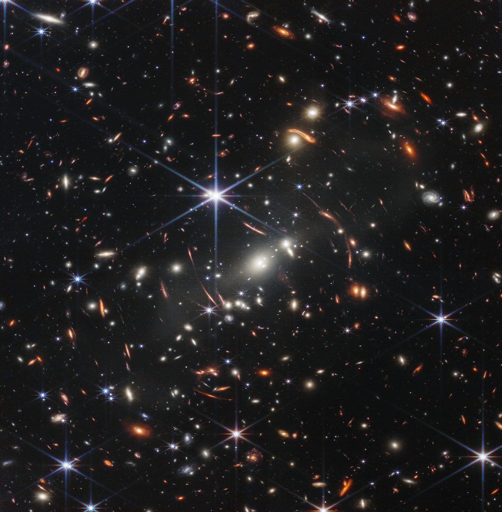
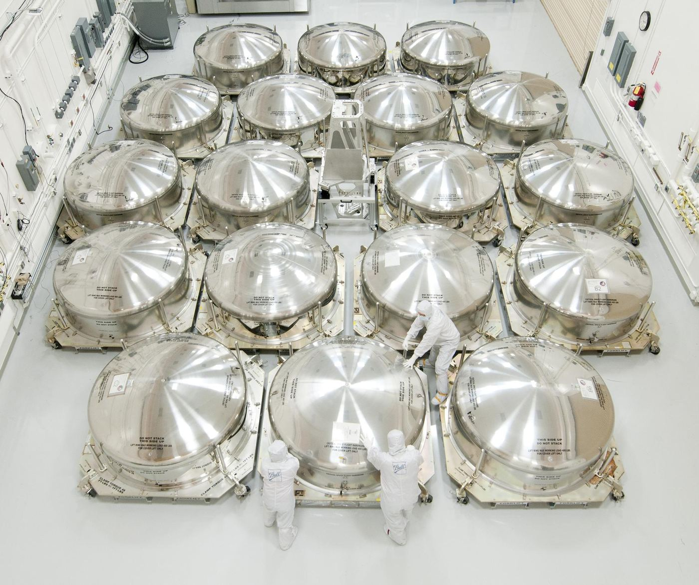
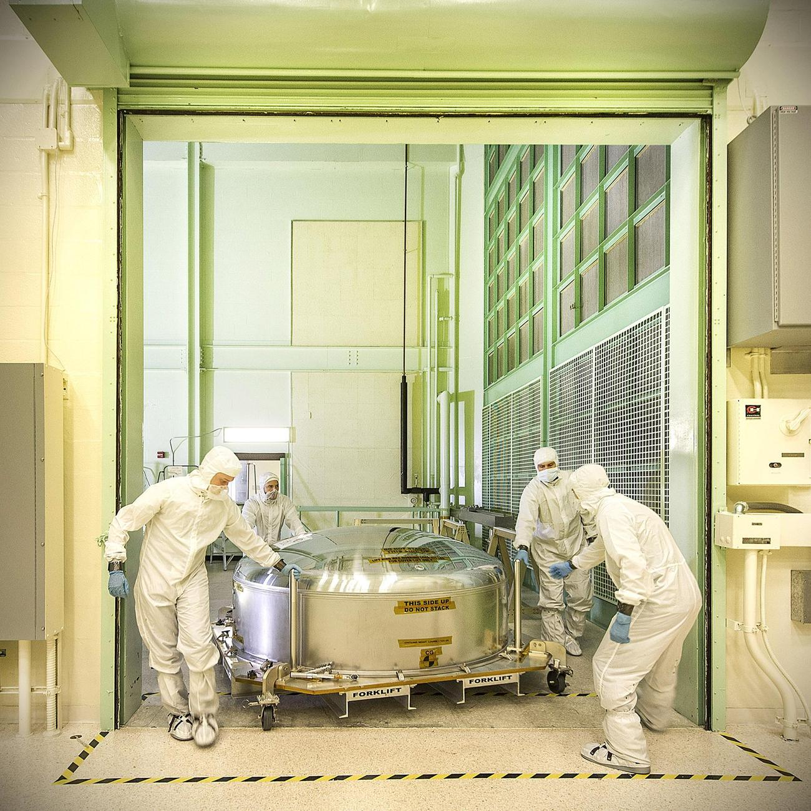
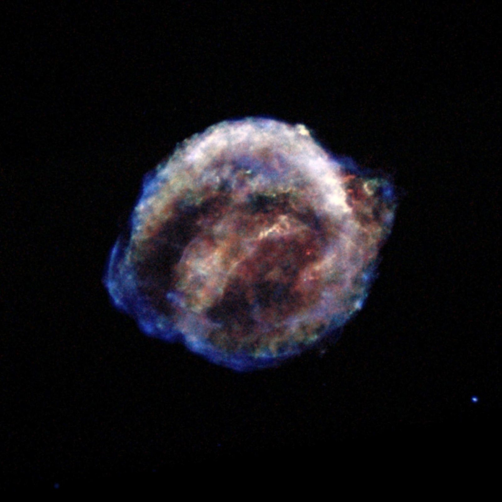
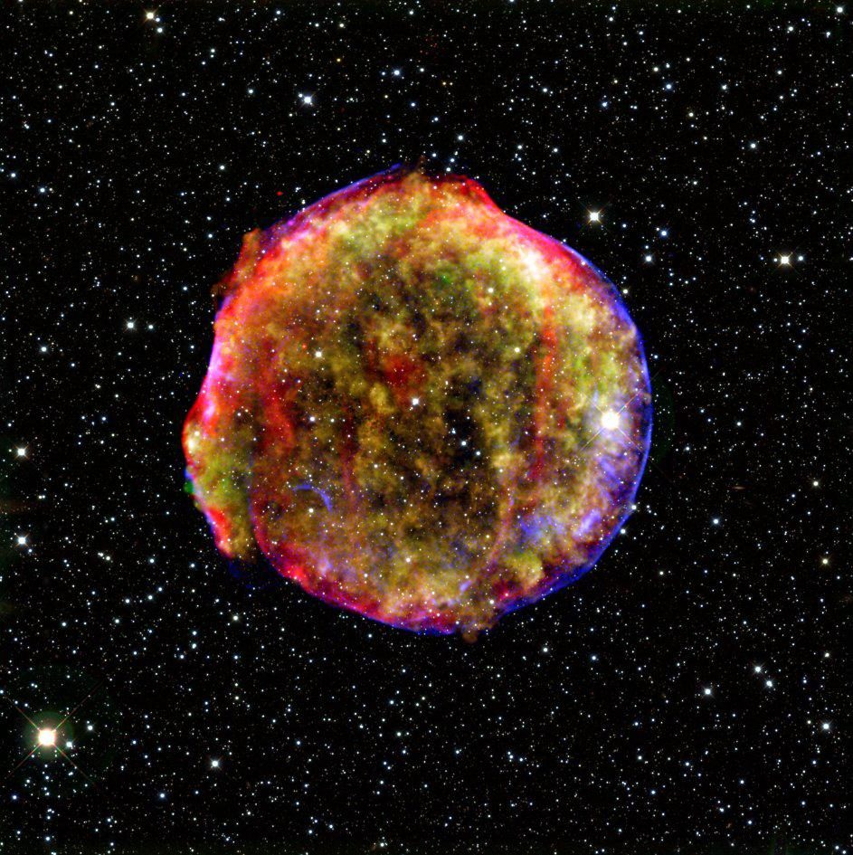
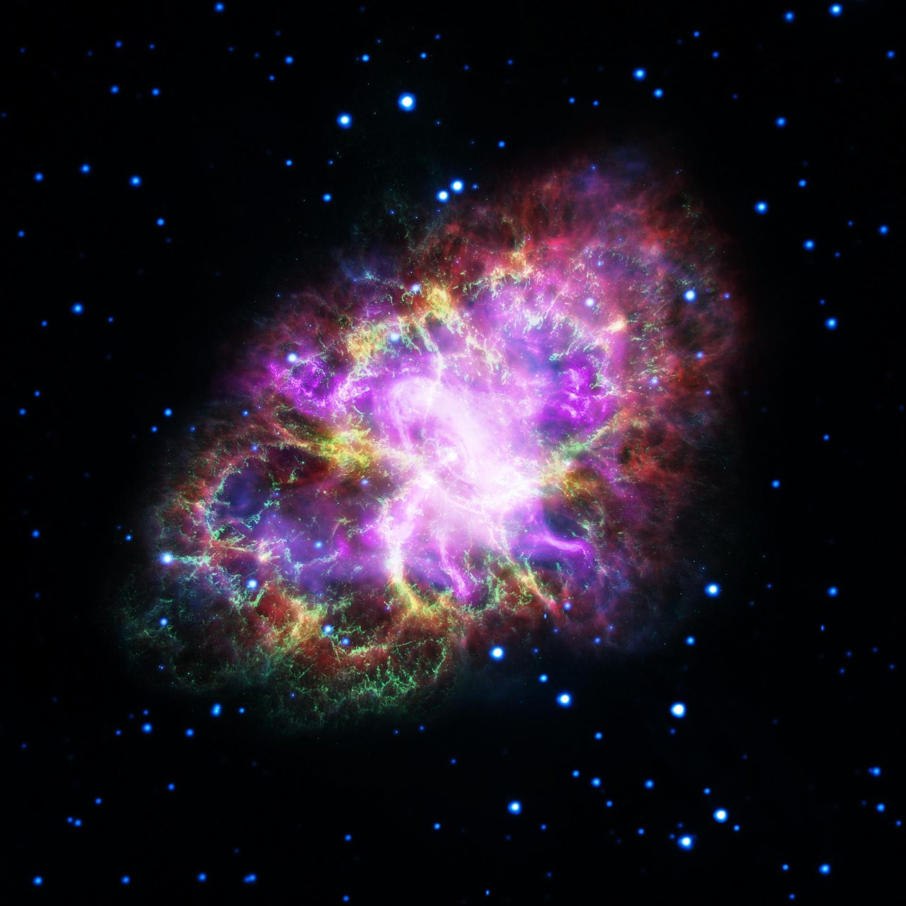
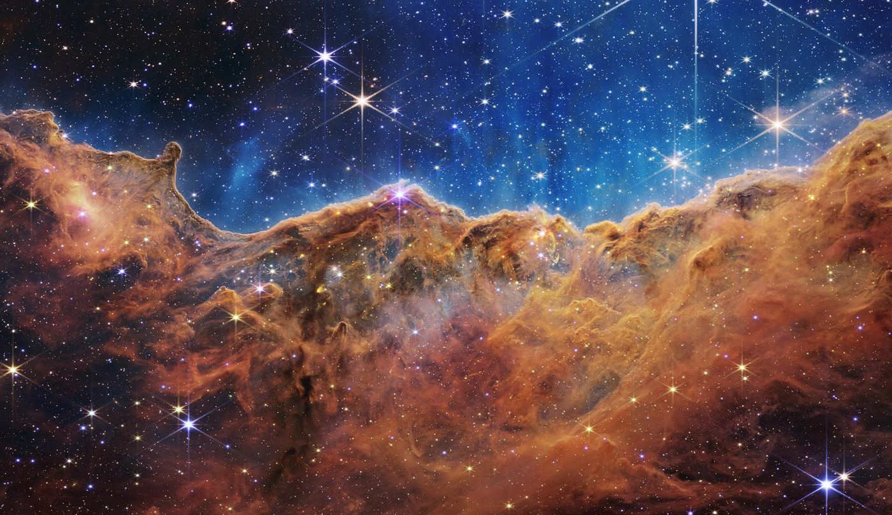
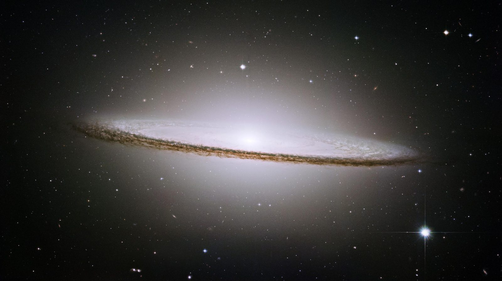
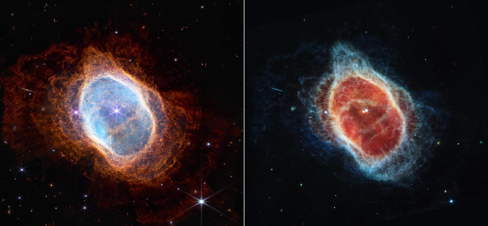

Other worlds, and the wider universe
From the ancient asteroids that swarm Jupiter's orbit to the first galaxies that lit the early cosmos, SSAI helps the missions that map our place among the stars. We engineer, integrate, test, and operate the instruments, and turn the faint light they gather into measured, peer-reviewed science.
From the Moon to the edge of the observable
SSAI's science extends from the lunar surface to the most distant objects ever observed. The same craft that lets us read the Earth's atmosphere from orbit also lets us read a galaxy thirteen billion light-years away, careful instruments, rigorous calibration, and the long discipline of turning photons into data.
We do not own or fly the spacecraft; NASA, its centers, and its prime contractors do. What we do is build, align, and test the instruments in the clean room, operate them once they reach their stations, and convert their raw light into the calibrated measurements scientists can trust. Across heliophysics, Earth science, and the universe beyond, that is the work, and here it reaches its furthest.
The missions that map our place among the stars
SSAI supports a span of planetary and astrophysics missions, from asteroid reconnaissance in our own solar system to the great observatories peering back toward cosmic dawn.
Lucy
NASA's Lucy mission is the first to tour the Trojan asteroids, the ancient swarms that share Jupiter's orbit and preserve material from the dawn of the solar system. SSAI contributes to the instrument and science effort behind reading these primitive worlds.
Trojan asteroidsJWST & Roman
The James Webb Space Telescope looks back toward the first galaxies; the Nancy Grace Roman Space Telescope will survey the sky at scale to probe dark energy and cosmic structure. SSAI supports the instrument and data work that turns their light into science.
Early galaxies · cosmologyChandra & XRISM
The Chandra X-ray Observatory and the X-Ray Imaging and Spectroscopy Mission (XRISM) observe the hottest, most violent corners of the cosmos, supernova remnants, black holes, and the gas between galaxies. SSAI supports the science of reading their high-energy view.
Supernovae · black holesHOLMS
The Heterodyne OH Lunar Miniaturized Spectrometer, an SSAI-developed instrument destined for the lunar surface through NASA's Commercial Lunar Payload Services initiative, to measure the water cycle in the Moon's thin atmosphere.
CLPS payloadWater for Artemis
The water HOLMS measures will be crucial to Artemis, which aims to establish a permanent human presence on the Moon, making its measurement a foundation for what comes next.
One craft, every scale
Whether the target is a kilometer-wide asteroid or a galaxy at the edge of time, the method is the same: build the instrument, calibrate it, operate it, and turn its light into measurements scientists can stand behind.
Webb, and the light from the first galaxies
The James Webb Space Telescope was assembled and tested in the world's largest clean room at NASA Goddard, next door to SSAI. Its 18-segment, gold-coated primary mirror was built to gather light that has traveled for almost the whole age of the universe.

NASA, ESA, CSA, STScI (James Webb Space Telescope)Webb's First Deep Field flooded a single near-infrared frame with thousands of galaxies, and gravitational lensing bent the light around cluster SMACS 0723 to reveal some of the faintest, most distant objects ever observed. To produce science from such an image, the instrument must be understood to extraordinary precision: every detector quirk characterized, every wavelength calibrated, every artifact accounted for.
That is the unglamorous craft behind the famous picture, the calibration and validation, the data pipelines, the patient turning of raw light into trustworthy measurement. It is the work SSAI does across mission after mission, and it is what lets a deep field become a catalog of the early universe rather than just a beautiful frame.
- Detector characterization and calibration of instrument data.
- Data systems and pipelines that turn raw frames into science products.
- Cal/val that lets distant, faint signals be trusted as measurements.
 NASA/Goddard Space Flight Center
NASA/Goddard Space Flight Center
Before it ever reaches the dark
An observatory is only as good as the work done on the ground. Engineers integrate each instrument, align each mirror segment, and test the whole system against the cold and vacuum of space, long before launch.

NASA/Goddard Space Flight Center NASA/Goddard Space Flight Center
NASA/Goddard Space Flight Center

NASA/Goddard/Chris GunnReading the universe in X-rays
Some of the most important physics in the cosmos is invisible to the eye. Chandra and XRISM observe the universe at X-ray energies, the temperature of exploded stars, the spin of black holes, the diffuse gas that binds clusters of galaxies together.
The Chandra X-ray Observatory has spent more than two decades imaging the hottest, most violent objects in the sky. The Kepler and Tycho supernova remnants, the shock-heated debris of stars that exploded centuries ago, glow only at these high energies, where expanding gas reaches millions of degrees.
XRISM, the X-Ray Imaging and Spectroscopy Mission, adds a new generation of spectroscopy, resolving the motion and composition of that hot gas in unprecedented detail. SSAI supports the science of reading these instruments, calibrating their response, processing their data, and converting raw X-ray events into measurements of the physics behind them.
- Calibration and data processing for high-energy observations.
- Spectroscopy that resolves temperature, motion, and composition.
- Science support across supernova remnants, black holes, and hot gas.

NASA / Chandra X-ray Observatory (JPL)
NASA / Chandra X-ray Observatory + Spitzer Space Telescope (JPL)
NASA, ESA, NRAO/AUI/NSF and others (Goddard Space Flight Center)Billions of points of light, turned into data
A galaxy is not a picture, it is a measurement. Position, brightness, redshift, and motion for every resolvable source, extracted star by star, source by source. That conversion, from light into catalog, is the discipline SSAI brings to the great observatories.
From a single galaxy to the shape of the cosmos
Webb and Roman approach the universe from two directions, Webb looking deep at the faintest, earliest galaxies, Roman surveying wide to trace how cosmic structure grew. Hubble's enduring portraits, like the edge-on Sombrero Galaxy, remind us why the precision matters.

NASA, ESA, CSA, STScI (James Webb Space Telescope)
NASA / Hubble Space Telescope (JPL)
NASA, ESA, CSA, STScI (James Webb Space Telescope)What SSAI actually does
We are clear about our role. SSAI does not own or manufacture flight hardware, NASA, its centers, and its prime contractors do. Our contribution is the engineering and science that surround the instrument: building and integrating it, testing it against the conditions of space, operating it on orbit or en route, and turning everything it gathers into calibrated, trustworthy data.
That is the through-line from a lunar spectrometer to a deep-field telescope. The target changes; the discipline does not.
Scientific leadership
SSAI's research is overseen by Chief Corporate Scientist Oreste Reale, Ph.D., with 25 years at NASA Goddard in atmospheric dynamics and data assimilation, anchoring a scientific culture that spans all three domains, including the universe beyond.
Beside NASA Goddard
From The Aerospace Building in Lanham, Maryland, next door to the clean room where Webb was assembled, SSAI's engineers and scientists work shoulder to shoulder with the missions they support.
Lanham, MD